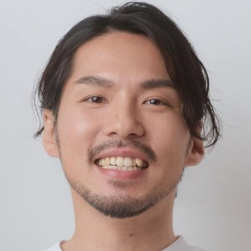
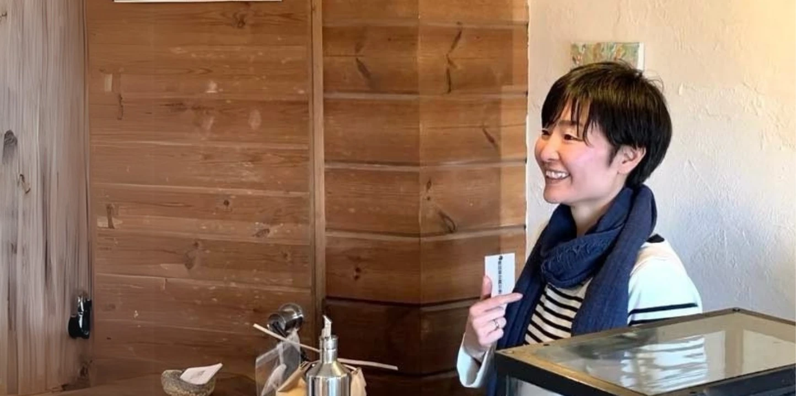
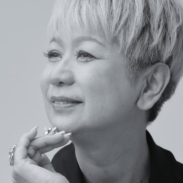

オーガニックを扱う、
お店・畑・サロン・講師・専門職の方へ
もし、あなたが、
こだわりのオーガニックの
商品やサービスを
理解されたいと
思っているなら。
ドイツ在住17年の専門家が、
その良さを、届けたい人に
届ける方法を、無料でお伝えします。
オーガニックを扱う、
お店・畑・サロン・講師・専門職の方へ
もし、あなたが、
こだわりのオーガニックの
商品やサービスを
ドイツ在住17年の専門家が、
その良さを、届けたい人に
届ける方法を、無料でお伝えします。
D私は、何者か
オーガニックを扱う人が、その良さを届けたい人に、自分の言葉で届けられるようになるために。
私は、このスクールをつくりました。
オーガニック専門家コースの最初の授業を、無料でお渡しします。世界的な定義から学び、自分の言葉で説明するための入り口です。
ドイツで17年暮らし、大学院・食品研究所で有機農業を研究。延べ1,900人以上が学ぶスクールを創立しました。
自分が目指す社会を言葉にできて、その言葉を待っている人と、出会いやすくなります。
登録後すぐに、授業動画のページをご案内するメールが届きます。届かない場合は、迷惑メールフォルダをご確認ください。配信はいつでも解除できます。
B学ぶと、何が変わるか
変化の現れ方は、人によって異なります。
Eなぜ、本物と言えるのか
この仕事をしている理由は、20代の頃にあります。JICAの一員としてボリビアとメキシコで、途上国の生産者支援に携わりました。豊かな国の暮らしが誰かの犠牲の上に成り立っている、その不条理を変えたいと論文を読み漁るなかで、オーガニックという「仕組み」に出会いました。確かめるためにドイツへ渡り、いまもここで暮らしています。
私も、使う言葉で届く人を変えていました
2〜3年前の私は、「あなたにとってのメリット」を強く伝え、「私に応援させてください」と繰り返していました。
その後、会社が倒産しそうになり、私は大きく舵を切りました。インプットするものを変えたのです。
「どう届けるか」だけを見るのではなく、私が目指す社会に、どうすれば同じ方向を向く人が増えていくのか。そこを学び、人とのつながりも広げるようになりました。すると、オーガニックは世界を変えていく力にもなると、以前より強く感じるようになりました。
見えるものが変わると、使う言葉が変わりました。言葉が変わると、集まる人も変わりました。そして、結果もついてくるようになりました。
レムケなつこ
Uなぜ、今まで届かなかったのか。なぜ、今なのか
オーガニックの内容は、まだ広く知られていません。農林水産省の消費者調査では、内容を知らない人が約6割でした。
61.4%
が、内容を今回初めて知った、または言葉を今回初めて聞いた
出典：農林水産省「令和7年度 有機農業及び有機食品に関する意識・意向調査結果」（消費者3,000人・2025年11〜12月）。30.1%は「栽培方法・製造方法は知っていたが表示ルールは知らなかった」14.7%と「表示ルールは知っていたが栽培方法・製造方法は知らなかった」15.4%の合計。
また、有機食品を購入している人が持つイメージは、次のとおりでした。多くの場面で、価格と、安全・安心の話として語られてきました。
出典：農林水産省 同調査（購入している有機食品についてのイメージ）
いまは、自分の言葉を、届けたい人へ直接届けられる時代です。だからこそ、使う言葉が、どんな人に届くかを決めていきます。
N見えていなかったもの
なぜ、伝えているのに伝わらないのか。それは、相手の物差しが「得かどうか」になっているからかもしれません。なぜそうなるのか。自分へのメリットを中心に語ることが、当たり前になっていたからです。あなたのせいではなく、語り方の型がそうさせていました。
自分へのメリットを中心に伝える
「高いですね」が出やすくなる
目指す社会も、あわせて伝える
価格以外の物差しで、受け取られる
次のようなことが起きているなら、その物差しの中にいるのかもしれません。
あなたが目指す社会に、
お客様は集まっていますか？
I新しい届け方
IOBで学ぶオーガニックの価値は、自分や消費者にとってのメリットに加えて、社会、地球、そして未来世代にとってのベネフィットまでです。学びの半分は後者で、どちらもエビデンスをもとに学びます。
定義・歴史・世界の考え方・真価を、エビデンスから学びます。
オーガニックの定義、歴史、世界での考え方、その真価を学びます。自分や消費者にとってのメリットに加えて、社会、地球、未来世代にとってのベネフィットも学びます。学びの半分は後者で、どちらもエビデンスをもとにしています。
知ったあとに、自分は何を大切にするのかを考えます。
知識を増やしたあとに、自分はその中の何を大切にするのかを考えます。IOBには、「自分は誰に届けたいのか」を考えるワークがあります。自分の商品や活動とつなげて、自分は何を届けたいのかを考えていきます。
言葉をつくり、実際に出して、反応から磨きます。
考えただけでは、相手にどう届くかは分かりません。IOBには、自分の商品や活動について言葉をつくり、実際に出して、フィードバックを受ける機会があります。出した言葉の受け取られ方を知りながら、言葉を磨いていけます。同じ方向を見る人たちと学べる環境も、続けていく力になります。
C受講生に起きた変化
オーガニック専門家コースで学んだ、受講生本人の言葉です。

猿田一生さん
美容室オーナー／THE ORIENTAL JOURNEY（千葉県柏市）代表
一般社団法人 日本サステナブルサロン協会 代表理事
従業員時代はこの想いが理解されず、日々孤独を感じていました。
IOBでの学びは、私の信念を確固たるものにし、自信を持って発信する力を与えてくれました。
その結果、多くの方から支持を得ることができ、IOBのスクール生の方たちがたくさん来店してくれるようになったり、「ずっと、こんなサロンを探していた」と涙するお客様の姿を見たりしたときには、努力が報われたと感じました。
上鶴恵子さん
経営者／地域の倫理法人会でオーガニックを伝える講師（山梨県）
お話を聞いてくれた経営者さんたちが「自分たちも力になりたい」と、たくさん入会してくれて、その後は畑の作業にも来てくださる。そんな活動の輪が広がりました。
勇気を持って一歩を踏み出して分かったことは、ちゃんと伝えれば、こんなに理解者が増えるんだということでした。
田中優介さん
農業法人を立ち上げ中（淡路島）
家族に「なんで自然農という選択をしたの？なんで肥料とか農薬を使わないの？」と聞かれたとき、単純にそうしたいから、ということでしか説明ができませんでした。
前までは、理解してくれないし、聞く耳も持たないというレベルでした。そんな人たちが、僕の活動を聞ける時間があれば「聞きに行くわ」と言ってくれた。すごい成果だなと思っています。

森 奈央さん
「森のorganic shop Bitte」オーナー（北海道・七飯町）
お店に来てくださる方は、やはりオーガニックに興味がある方なんです。じゃあ、興味がない方にどのように周知していくのか。
「お店の協力をしたい」「私も何かできることで協力したい」——講座をやっていると話すだけで、そんな声をいただけるようになりました。
リピーターの方が、最近増えてくださっています。
柳田夕希さん
ピラティス講師／フルオーガニック酵素ドリンク「Natural FLORA」製造販売
オーガニックは美容とか健康にいいということしか、私は知らなくて。そういうところじゃなくて、オーガニックが社会を変える仕組み、社会全体を幸せにする仕組みということを学んだのが、すごく自分の中で気づきがありました。
IOBを受講されている皆さんとのつながりで、お仕事にもつなげていただきました。クランデールさんですごく販売していただいて、人気をいただいていて、めちゃくちゃ嬉しいです。
入っていなかったら、本当にビジネスも成り立たないですし、オーガニックのことを話せる仲間もいなかったと思います。

川田むつみさん
オーガニックスーパー「クランデール」「ココシーズンズ」（千葉県松戸市）代表
株式会社かわた 取締役
お客様から「オーガニックって何ですか？」と尋ねられるたびに、自信を持って答えることができず、自分の無知さに直面しました。
IOBで学んだ、エビデンスに基づくオーガニックの知識は、食の専門家として、オーガニック商品を扱う経営者としてブレない「軸」となり、自信を与えてくれました。
その学びを伝え続けた結果、私のインスタフォロワー数は4倍に成長。「オーガニックを正しく広めたい」と願う仲間たちとともに活動しながら、店舗も拡大し、ビジネスは順調に成長しています。（個人の感想です）
横にスワイプできます →
ここに置いた言葉は、書籍とインタビュー動画で本人が語ったものをそのまま引用しています。
まずは、最初の一本から。
K最初の一歩
無料でお渡しするのは、オーガニック専門家コースで受講生が最初に学ぶ授業です。6つのパートに分かれていて、1パートずつ見ることもできます。
ドイツIOBオーガニックスクール
オーガニックを、
自分の言葉で伝えるための
最初の授業
お渡しするのは、この授業動画1本です。
AFTER
この一本で目指す、最初の変化
授業のあとには、5通のメールをお送りします。授業で知ったことを自分の中でつなぎ、自分なら何と言うのかを考えていく5通です。
あなたが大切にしているものを、それを待っている人に届けるために。
登録後すぐに見られます
レムケなつこが暮らすドイツ・アルゴイ地方
MISSION応援の循環
オーガニックの全体像が、自分の中で一本につながる
「私はこう考える。だから、これを届けている」と話せる
「これを探していた」「この活動を応援したい」と思う人が出てくる
選ぶ理由が「あなただから」に変わっていく
豊かになった事業から、オーガニックがまた次の誰かに届く
一人の言葉が、次の一人の選択を変える。
その循環を育てるために、私はこのスクールを続けています。
レムケなつこ
「オーガニックが、
あたりまえ。」な社会へ
あなたが大切にしていることを、自分の言葉で話せるようになること。その言葉を必要としている人に、きちんと届けられるようになること。そんな人が一人ずつ増えていけば、「オーガニックが、あたりまえ。」な社会に近づいていくと、私は信じています。
まずは、この授業から始めてみてください。無料でお渡しします。
登録後すぐに、授業動画を無料でお届けします。配信はいつでも解除できます。